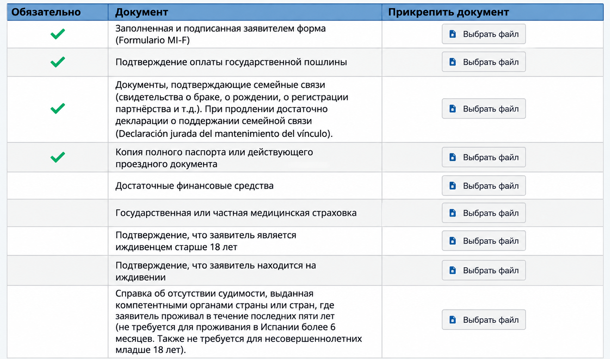

Первичная подача
ВНЖ для членов семьи цифрового кочевника в Испании
Помощь в подаче документов на ВНЖ Испании: t.me/ola_espana
Как оформить ВНЖ супругу, партнеру, детям и другим членам семьи цифрового кочевника в Испании: кто может подаваться, какие документы нужны и как устроена отдельная подача в UGE.
Основной заявитель может работать в найме или работать по контракту. Для каждого члена семьи создается отдельная подача: одновременно с основным заявителем или позже, после получения им разрешения.
Разрешение члена семьи по Ley 14/2013 дает право жить и работать в Испании; отдельное разрешение на работу не требуется.
Кто может подаваться как член семьи
По этой категории могут подаваться:
- супруг или супруга;
- зарегистрированный партнер или партнер в устойчивых отношениях;
- несовершеннолетние дети;
- совершеннолетние дети, которые материально зависят от основного заявителя и не создали собственную семью;
- родители и другие восходящие родственники, находящиеся на иждивении.
Для обычной подачи супруга или несовершеннолетнего ребенка пакет заметно проще. Для совершеннолетних детей и родителей нужно отдельно доказывать зависимость.
Список документов
Здесь присяжный перевод — официальный перевод, выполненный испанским присяжным переводчиком.
| Документы |
|---|
| Formulario MI-F Подписанное заявление члена семьи. На каждого заявителя заполняется отдельная форма. Официальная форма MI-F. |
| Госпошлина Tasa 790 038 На каждого заявителя оплачивается отдельная госпошлина; прикладывается подтверждение оплаты. |
| Документ о родстве Для супруга — свидетельство о браке, для ребенка — свидетельство о рождении, для зарегистрированной пары — документ о регистрации союза. Российские документы ЗАГС не требуют апостиля для Испании, но нужен присяжный перевод. В памятке UGE по продлению для супруга предусмотрена декларация основного заявителя о сохранении семейной связи и совместного проживания. Повторное свидетельство о браке в этом перечне не указано. Подробнее ↓ |
| Паспорт члена семьи Полная копия действующего паспорта, все страницы. |
| Экономические средства — если член семьи подается после основного заявителя При одновременной подаче основной заявитель подтверждает необходимый доход с учетом всей семьи, поэтому отдельный блок средств в деле члена семьи дублировать не требуется. Если член семьи присоединяется позже, средства основного заявителя подтверждаются заново. Подробнее ↓ |
| Государственное или частное медицинское страхование — если член семьи не получает покрытие через испанскую Seguridad Social или иное подтвержденное государственное покрытие в Испании Для супруга или ребенка основного заявителя, который работает по контракту / как autónomo, отдельный частный полис не нужен, если после одобрения основной заявитель входит в испанскую Seguridad Social и член семьи имеет право на медицинское покрытие как beneficiario. Если основной заявитель работает в найме, частный полис нужен, когда нет отдельного документа, подтверждающего государственное медицинское покрытие члена семьи в Испании. Подробнее ↓ |
| Подтверждение экономической зависимости — если подается совершеннолетний ребенок Нужно доказать, что ребенок соответствует условиям для подачи как зависимый член семьи. Подробнее ↓ |
| Подтверждение нахождения на иждивении — если подается родитель или другой восходящий родственник Нужно подтвердить реальную зависимость от основного заявителя или его супруга. Подробнее ↓ |
| Справка о несудимости — для совершеннолетнего при первичной подаче, если не действует исключение UGE Российская справка — с апостилем и присяжным переводом. Не требуется лицам младше 18 лет. Также ее можно не подавать, если заявитель уже имеет испанское разрешение на проживание или пребывание сроком более 6 месяцев и соответствующая справка уже подавалась для его получения. Подробнее |
| Декларация об отсутствии судимости за последние 5 лет — для совершеннолетнего заявителя (скачать) Отдельная declaración responsable на испанском языке; перевод не нужен. |
| Подтверждение легального нахождения в Испании — если заявление подается из Испании Нужно показать, что именно этот член семьи находится в Испании легально на дату подачи. Declaración de entrada прикладывается только когда она нужна для подтверждения конкретного въезда. Подробнее |
| Документ о назначении представителя — если заявление подает представитель Designación de representante должна давать представителю право подписать заявление и подать документы. |
| Дополнительные документы — если их требует конкретный кейс Например, нотариальное согласие второго родителя, дополнительные доказательства зависимости или пояснительное письмо. |
Форма подачи UGE
На скриншоте ниже — раздел загрузки документов из электронной формы подачи UGE для члена семьи цифрового кочевника. Документы, для которых в форме UGE нет отдельного поля, загружаются в раздел «Остальные документы».

Документ о родстве
Супруг или супруга
Приложите свидетельство о браке.
Точный срок давности свидетельства о браке UGE не устанавливает. Но на практике слишком старый документ может вызвать вопросы или дозапрос, поэтому рекомендуем по возможности подавать свидетельство, выданное не более 6 месяцев назад. Шесть месяцев — практический ориентир, а не официальный срок действия документа.
Для свидетельства, выданного российским ЗАГС:
- апостиль не нужен;
- нужен оригинал / официальный повторный документ;
- нужен присяжный перевод на испанский.
Основание — Canje de Notas entre España y la URSS de 24 de febrero de 1984 о взаимном признании свидетельств органов ЗАГС без легализации. Соглашение продолжает применяться между Испанией и Российской Федерацией. Консульство Испании в Москве прямо указывает, что российские свидетельства ЗАГС не должны иметь апостиль.
Это правило относится не только к браку, но и к другим российским свидетельствам ЗАГС, в том числе к свидетельству о рождении.
Партнер
Если союз зарегистрирован, приложите свидетельство о регистрации pareja de hecho или аналогичный документ.
Если союз не зарегистрирован, UGE требует доказать устойчивые отношения и не менее одного года непрерывного совместного проживания непосредственно перед подачей. В памятке UGE в качестве примеров указаны общие банковские счета, совместная регистрация по адресу, общий договор аренды, ипотека или собственность, совместный бизнес; рекомендуется подтвердить не менее двух таких обстоятельств.
Если у пары есть общий ребенок, год совместного проживания доказывать не требуется, но нужно подтвердить фактические отношения на момент подачи.
Несовершеннолетний ребенок
Приложите свидетельство о рождении. Срок давности не установлен.
Если свидетельство выдано российским ЗАГС:
- апостиль не нужен;
- нужен присяжный перевод.
Для ребенка младше 18 лет справка о несудимости не требуется.
Если несовершеннолетний не является ребенком основного заявителя или его супруга и не был усыновлен заявителем, который не является его родителем, актуальная памятка UGE требует нотариальное согласие другого родителя, прямо разрешающее проживание ребенка в Испании с подающим родителем. Для усыновления, оформленного за пределами ЕС, UGE также указывает на необходимость признания решения испанским судом (exequátur).
Важно: нотариальное согласие — это не документ ЗАГС, поэтому российско-испанское соглашение 1984 года на него не распространяется. Для российского нотариального согласия нужен апостиль + присяжный перевод.
Совершеннолетний ребенок
Для совершеннолетних детей UGE отдельно проверяет зависимость. В памятке первая группа сформулирована как «старше 18 и младше 26 лет». Для нее нужно подтвердить, что ребенок:
- не получает доход от работы или государственных выплат;
- учится в учебном заведении с возможностью продолжить обучение из Испании либо находится в активном поиске работы;
- не создал собственную семью.
Для детей старше 26 лет нужно доказать состояние, которое не позволяет им быть экономически самостоятельными.
Возраст ровно 26 лет в актуальной памятке UGE отдельно не оговорен: в ней указаны категории «старше 18 и младше 26» и «старше 26». Для такого случая лучше исходить из документов конкретного заявителя и, при необходимости, уточнять позицию UGE.
Родитель на иждивении
Нужно подтвердить само родство и реальную зависимость от основного заявителя или его супруга.
Для экономической зависимости UGE просит показать устойчивую помощь как минимум за один год до подачи. Если родственник жил вместе с основным заявителем, подтверждается совместное проживание не менее года; если совместного проживания не было — помощь в оплате жилья и регулярная материальная поддержка минимум за год. Также подтверждается отсутствие дохода от работы и государственных выплат.
Если зависимость связана со здоровьем, используются медицинские заключения и документы социальных служб.
Для восходящих родственников старше 80 лет UGE исходит из презумпции нахождения на иждивении.
Доход на семью
Доход подтверждает основной заявитель, а не член семьи.
Минимум складывается так:
- основной заявитель — 200% SMI;
- первый член семьи — дополнительно 75% SMI;
- каждый следующий член семьи — дополнительно 25% SMI.
В 2026 году SMI составляет 17 094 € в год. Если перевести его в среднемесячную сумму для расчета DNV, получается 1 424,50 €.
| Семья | Минимальный доход в месяц в 2026 году |
|---|---|
| Только основной заявитель | 2 849,00 € |
| Основной заявитель + 1 член семьи | 3 917,38 € |
| Основной заявитель + 2 члена семьи | 4 273,50 € |
| Основной заявитель + 3 члена семьи | 4 629,63 € |
Если подаетесь одновременно
По актуальной памятке UGE, если заявления основного заявителя и членов семьи подаются одновременно, достаточно, чтобы основной заявитель подтвердил достаточные средства с учетом всей семьи. Отдельно дублировать весь блок доходов в каждом деле члена семьи не требуется.
Если член семьи подается после одобрения основного заявителя
UGE просит заново показать, что основной заявитель сейчас располагает достаточными средствами.
Если основной заявитель работает по найму, обычно прикладываются:
- трудовой договор;
- зарплатные листы за последние 3 месяца;
- банковский сертификат / выписка с поступлениями зарплаты за последние 3 месяца.
Если основной заявитель работает по контракту / как autónomo, обычно прикладываются:
- действующий контракт или контракты;
- инвойсы за последние 3 месяца;
- банковский сертификат / выписка с поступлениями по этим инвойсам за последние 3 месяца.
Если подтвержденный доход ниже установленного минимума, UGE разрешает подтвердить разницу ликвидными сбережениями или другими ликвидными доходами. Процентный лимит не установлен: средств должно хватать на покрытие всей разницы за весь срок разрешения. Банковский сертификат должен быть актуальным, оформленным на имя основного заявителя и подписанным или заверенным банком.
Медицинская страховка
Основной заявитель работает по контракту / как autónomo
Если после одобрения основной заявитель регистрируется в испанской Seguridad Social как autónomo, UGE прямо указывает, что отдельный документ о частной медицинской страховке для члена семьи не требуется, когда он имеет право на медицинское покрытие как beneficiario.
Если основной заявитель уже зарегистрирован в испанской Seguridad Social, при необходимости подтверждаются его регистрация в системе и право члена семьи на такое покрытие.
Исключение: незарегистрированный партнер (pareja de hecho) не приобретает автоматически право на покрытие как beneficiario. Для такого партнера UGE отдельно требует частную медицинскую страховку.
Основной заявитель работает в найме
Если основной заявитель не будет включен в испанскую Seguridad Social и использует международное соглашение о социальном обеспечении, отсутствие частной страховки допустимо только при наличии отдельного документа компетентного органа, который прямо подтверждает медицинское покрытие члена семьи в Испании.
Российско-испанский Convenio de Seguridad Social de 11 de abril de 1994 не включает медицинскую помощь (asistencia sanitaria) в перечень координируемых выплат и покрытий. Поэтому обычное свидетельство СФР о применимом законодательстве само по себе не подтверждает медицинское покрытие в Испании ни основного заявителя, ни членов семьи. Для типичного российского случая при работе в найме нужен частный медицинский полис в Испании, если нет другого документа, прямо подтверждающего право на государственное медицинское покрытие в Испании.
UGE не принимает туристическую страховку, полис только с возмещением расходов, страховку с copago или с периодами ожидания (carencia).
Несудимость
Совершеннолетнему члену семьи при первичной подаче нужны:
- справка о несудимости из страны или стран проживания за последние 2 года;
- декларация (declaración responsable) об отсутствии судимости в странах проживания за последние 5 лет.
Справка не требуется лицам младше 18 лет.
Также UGE указывает исключение: справку можно не подавать, если заявитель уже имеет испанское разрешение на проживание или пребывание сроком более 6 месяцев и эта справка уже подавалась для получения такого разрешения.
Легальное нахождение в Испании
Если заявление подается из Испании, сам член семьи должен находиться здесь легально на дату подачи.
Подтверждение въезда и нахождения готовится по той же логике, что и для основного заявителя: см. отдельный гайд.
Declaración de entrada — не универсальный обязательный файл для каждого члена семьи. Она нужна, если именно через нее подтверждается въезд / нахождение в конкретном кейсе.
Пример пакета: супруг или супруга при одновременной подаче с основным заявителем-autónomo
Для обычного совершеннолетнего супруга пакет выглядит примерно так:
MI-F.pdf— заявление члена семьи.Tasa_familiar.pdf— госпошлина Tasa 790 038 и подтверждение оплаты.Marriage_certificate.pdf— российское свидетельство о браке без апостиля + присяжный перевод.Passport_familiar.pdf— полный паспорт, все страницы.Certificate_non-criminal_record.pdf— справка о несудимости с апостилем + присяжный перевод.Declaracion_responsable_antecedentes.pdf— декларация об отсутствии судимости за последние 5 лет.DECLARACION_DE_ENTRADA.pdfили другой документ о легальном нахождении — только если нужен по конкретному въезду.DESIGNACION_DE_REPRESENTANTE.pdf— только если заявление подает представитель.
При одновременной подаче:
- отдельную частную страховку супругу основного заявителя, работающего как autónomo, не прикладываем, если основной заявитель после одобрения будет зарегистрирован в испанской Seguridad Social и супруг имеет право на медицинское покрытие как beneficiario;
- весь блок доходов основного заявителя в пакет супруга повторно не обязателен — достаточно, что основной заявитель подтвердил средства на всю семью;
- при первичной подаче
Declaración jurada de mantenimiento del vínculo familiarне заменяет документ о родстве; в форме UGE эта декларация указана именно для продлений.
Если подается ребенок
Для несовершеннолетнего ребенка базово нужны:
- отдельный MI-F;
- отдельная госпошлина Tasa 790 038;
- свидетельство о рождении + присяжный перевод;
- паспорт ребенка, все страницы;
- подтверждение легального нахождения в Испании;
- при необходимости — нотариальное согласие второго родителя на проживание в Испании;
- декларация об отсутствии судимости за последние 5 лет (declaración responsable) — актуальная памятка UGE оставляет этот документ в общем списке, отдельно освобождая несовершеннолетних только от самой справки о несудимости.
Для российского свидетельства о рождении апостиль не нужен. Для российского нотариального согласия второго родителя, если оно требуется, апостиль нужен.
Если подается несколько членов семьи
На каждого человека создается отдельное заявление MI-F и оплачивается отдельная госпошлина Tasa 790 038.
Документы, относящиеся лично к члену семьи — паспорт, родство, несудимость (если требуется), подтверждение легального нахождения — прикладываются отдельно к его делу.